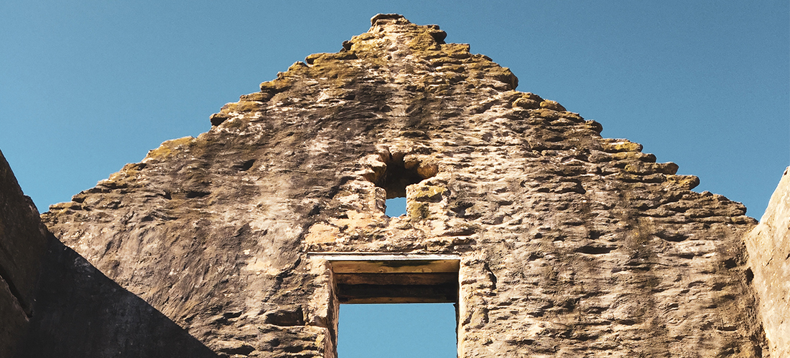
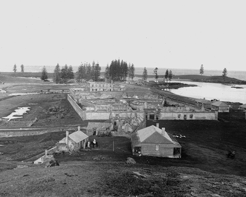

Gaol
Locations of KAVHA
Its uses during the First Settlement
During the first years of the First Settlement convicts lived in small wooden huts along the seafront and flatlands but later a gaol was needed to house wrongdoers. A stone gaol was built near the shore and is known as The Old Gaol. It was destroyed before the First Settlement was abandoned in 1814.
Its uses during the Second Settlement
The gaols were only used to house convicts who had committed extra offences on Norfolk Island. Other convicts were housed in prisoner’s barracks. In the late 1820s a small temporary gaol was built over the ruins of the first settlement one. It was still being used in the mid 1840s. The New Gaol was built gradually from 1836 to 1848 starting under Major Anderson. It was a pentagonal prison with 5 wings of cells each with their own exercise yard. Each wing could be supervised from the central building.
Unfortunately the gaol was terribly overcrowded which made living conditions appalling. Punishments were often very severe and convicts were hanged for serious offences.
Its uses during the Third Settlement
The Pitcairners did not use the gaol as they did not need it. They dismantled parts of it to recycle the stone for use in other buildings.
Its uses today
The Old Gaol is a ruin with only a few rocks visible on the land on the beachfront. The New Gaol is a ruin but parts of the complex are now used for performances.